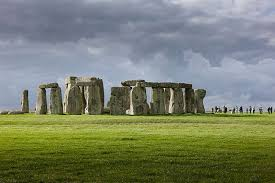

Overview
Most of us firmly believe that the universe originated from a single point, followed by a big bang phenomenon and after an unpredictable number of years ,we came into existence on a small celestial sphere called planet Earth. The question that “From where did that ‘single point’ originate?” is certainly a food for thought. We may also have a thought sometimes that “Are we the only entities in this whole universe ?”.But over few decades there have been instances which have challenged our beliefs and thoughts.My personal opinion: “We are not alone”. But opinions differ. Let us discuss few instances.
Apollo 11 Mission
This was a revolutionary mission for the human race and it certainly possessed its own set of intricacies and intrigues.Neil Amstrong became the first man to step on Moon followed by his compatriot Edwin ‘Buzz’ Aldrin. But,Russians said that it was faked by USA,but their protest did not garner any support as it was not based on a scientific foundation.However,there is belief that the crew of Apollo 11 had witnessed some extra terrestial activities.But,they were sworn to secrecy till death by the government. The full report of the program is believed to be kept in a file referred to as “X-files” by the conspiracy theorists. Aldrin clarified what he saw on July 8: On Apollo 11 on route to the Moon, I observed a light out of the window that appeared to be moving alongside us.
There were many explanations of what that could be, other than another spacecraft from another country or another world - it was either the rocket we had separated from, or the 4 panels that moved away when we extracted the lander from the rocket and we were nose to nose with the two spacecraft. So in close vicinity, moving away, were 4 panels. And I feel absolutely convinced that we were looking at the sun reflected off of one of these panels. Which one? I don't know. So technically, the definition could be "unidentified." So this phenomenon raises a lot of question.
Area 51
Area 51 is located in the southern portion of Nevada in the western United States, 83 miles (134 km) north-northwest of Las Vegas. Situated at its centre, on the southern shore of Groom Lake, is a large military airfield. The site was acquired by the United States Air Force in 1955, primarily for the flight testing of the Lockheed U-2 aircraft. The area around Area 51, including the small town of Rachel on the aptly named "Extraterrestrial Highway", is a popular tourist destination.
There have been a lot of conspiracy theories on this highly secretive and complicated area where things happen beyond our imagination, may be something not very earthly. Conspiracy theorists believe that the remains of crashed UFO spacecrafts are stored at this Area 51, an Air Force base about 150 miles from Las Vegas, where government scientists reverse-engineer the aliens' highly advanced technology. Fodder for this has come from a variety of supposed UFO sightings in the area and testimony from a retired Army colonel who says he was given access to extraterrestrial materials gathered from an alien spacecraft that crashed in Roswell, New Mexico. Some believe that the government studies time travel at Area 51, also known as Groom Lake or Dreamland.
Yet More Unsolved Mysteries
1.Crop Circles
2.The Bermuda Triangle
3.Mysterious huge rock formations at Stonehenge

4.The Aluminium Wedge of Aiud
In 1974, this wedge-shaped object was found 1.2 miles east of Aiud, Romania. It was discovered on the banks of the Mures River. Since it was found in the same layer as mastodon bones, it would indicate that this wedge was at least 11,000 years old. Many people believe that this wedge is evidence that aliens visited earth, since there is no way that humans created such an alloy so many thousands of years ago.
5.The Green Children
The Green Children of Woolpit were two children who appeared in the village of Woolpit in Suffolk, UK, in the 12th century. The brother and sister had green colored skin, even though they appeared normal in all other ways. They spoke an unrecognized language and refused to eat anything other than pitch from bean pods. Eventually, their skin lost its green color. After they learned English, they explained that they were from the “Land of St Martin,” which was a dark place because the sun never rose far above the horizon. They claimed that they were tending their father’s herd and followed a river of light when they heard the sounds of bells. Then they arrived in Woolpit. Some of the more unusual theories proposed for the origin of the children are that they were Hollow Earth children, children from the parallel dimension, or Extraterrestrial children.
Conclusion
The above instances are just a reflection of my opinions and perception.There are many more occurrences all over the world, in fact there are thousands of UFO sightings all over the world each year. We may be unaware about our future, but we must be aware of the presence of these transcendental beings around us. They may be sitting near us at a coffee shop, they may be anywhere camouflaged and hiding in plain sight to avoid any type of suspicions. We might never know the true nature of these aliens and unearthly species. “But we should be optimistic, if Goodness prevails in humanity then why not in alien life, we are also alien to those guys.” So theorizing without any concrete knowledge can cause a lot of inconvenience, it is possible that we may be coexisting on this earth with the alien life beside us after an unknown number of years. So keep your fingers crossed and increase your curiosity.